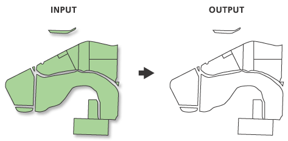

Polígonos a líneas
Permite convertir una capa de polígonos en una capa de líneas. El geoproceso no almacena dos veces la geometría compartida (líneas compartidas por dos polígonos adyacentes). En su lugar, almacena un solo registro con la geometría compartida que tendrá el FID (identificador) de los polígonos adyacentes que la comparten.
